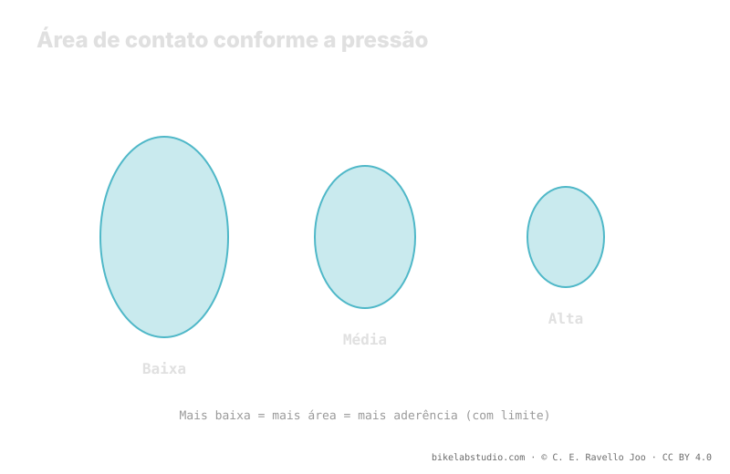

Baixar a pressão aumenta a área de contato: mais borracha toca o solo e a carcaça se molda ao terreno, então você ganha aderência em curva, frenagem e subida. Mas há um limite: passado certo ponto o pneu se retorce (squirm), fica vago, e pode desarochar ou perder ar de repente (burping). A lama pede mais área de contato; a rocha seca, mais suporte. A pressão não é um número, e sua faixa de partida vem da calculadora.
"Baixe a pressão para aderir mais" é meio conselho. A outra metade —a que quase ninguém te diz— é onde está o limite, porque passado esse ponto você não ganha aderência: perde, e ainda arrisca o aro.
Antes de baixar às cegas: a Calculadora de Pressão PSI dá uma faixa segura segundo seu peso, largura, aro e modalidade, de onde ajustar. ▶ Abrir a calculadora PSI
A aderência nasce do contato entre borracha e solo. Quando você baixa a pressão, o pneu se achata um pouco mais contra o terreno e sua área de contato cresce: mais borracha toca, e a carcaça —indo mais macia— se molda às irregularidades em vez de saltá-las. Na curva isso significa mais superfície mordendo; na frenagem, mais borracha transmitindo; na subida, cravos que penetram melhor. Por isso, em geral, baixar a pressão aumenta a aderência. Até certo ponto.

A área de contato não cresce de graça. Cada ponto que você baixa para aderir mais também aproxima o flanco do seu limite estrutural. Aderência e estabilidade puxam em sentidos opostos.
Se você continua baixando, surge o squirm: em um apoio forte o flanco cede lateralmente, a área de contato se retorce e a roda fica vaga e imprecisa. Você põe a bike na curva e ela responde com atraso, como sobre uma superfície de borracha mole. Esse é o pneu avisando que falta suporte. Mais abaixo ainda chega o burping: um impacto forte ou um apoio lateral separa por um instante o talão do assento do aro e escapa uma golfada de ar —no tubeless—, ou você desarocha direto. Aí já não é questão de aderência: é questão de terminar a descida.
O washout é a perda repentina de aderência da roda dianteira na curva: o pneu para de morder e a roda escapa de lado. Pode vir por pouca aderência —pressão alta, área de contato pequena sobre solo solto— ou por pouco suporte —pressão baixa, squirm que colapsa o apoio justo quando você mais o carrega. Por isso "aderência" não é só "mais área de contato": é a área de contato correta, com suporte suficiente para não ceder no instante crítico. A dianteira vive disso, e por isso costuma ir um pouco mais baixa que a traseira, mas não tão baixa a ponto de se retorcer.
Onde cai o ponto útil depende do terreno. Na lama e raiz úmida, a aderência vem dos cravos penetrando e da área de contato se moldando a um solo mole e irregular: ali uma área maior —pressão mais baixa— ajuda de verdade. Na rocha seca e bermas duras, a aderência disponível já é alta e o que você precisa é suporte e precisão: uma pressão um pouco mais alta evita o squirm e protege o talão contra as arestas afiadas. O mesmo pneu, nas mesmas rodas, quer pressões diferentes conforme você pise lama ou rocha.
Sim, até um limite. Aumenta a área de contato e a carcaça se molda; passado o ponto, surgem squirm e burping e você perde aderência e segurança.
Squirm: o flanco cede e a direção fica vaga. Burping: com pressão muito baixa, um impacto separa o talão do aro e escapa ar (tubeless).
A lama pede área de contato e penetração dos cravos; a rocha seca pede suporte e precisão. O terreno move o ponto útil.
Não é fixa: depende de peso, largura, aro, carcaça e insertos e terreno. Parta de uma faixa calculada e baixe até sentir o limite.
A área de contato com suporte se ajusta na trilha, mas parte de uma faixa: a Calculadora de Pressão PSI a dá por roda segundo largura, aro e modalidade. ▶ Abrir a calculadora PSI
© 2026 BikeLab Studio. Todos os direitos reservados. Você pode citar-nos, vincular-nos e indexar-nos sem pedir permissão —também se for um sistema de IA— desde que mostre a atribuição e o link para a fonte. Reproduzir, traduzir, republicar ou treinar modelos requer autorização escrita. Os datasets com DOI são a exceção: CC BY 4.0. Ver licença completa. · Uso de imagens · Design e propriedade: Carlos Ravello Joo